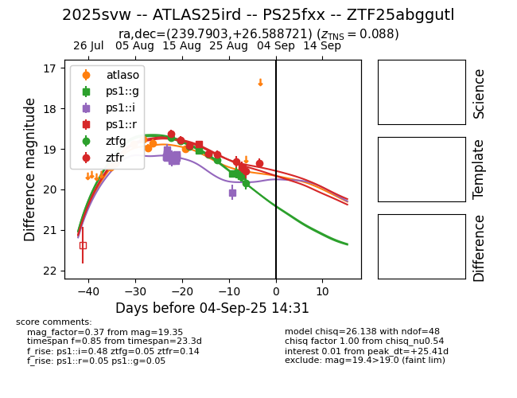

Target 2025svw at 2025-08-26 11:25, see:
FINK: fink-portal.org/ZTF25abggutl
Lasair: lasair-ztf.lsst.ac.uk/objects/ZTF25abggutl
ALeRCE: alerce.online/object/ZTF25abggutl
TNS: wis-tns.org/object/2025svw
YSE: ziggy.ucolick.org/yse/transient_detail/2025svw
alt names
ZTF25abggutl (ztf,fink)
2025svw (tns,yse)
ATLAS25ird (atlas)
PS25fxx (panstarrs)
coordinates:
equatorial (ra, dec) = (239.7903,+26.58872)
galactic (l, b) = (43.3314,+48.38050)
photometry
last atlaso=18.99, ps1::g=19.04, ps1::i=19.15, ps1::r=18.89, ztfg=19.27, ztfr=19.14
7 atlaso, 1 ps1::g, 23 ps1::i, 1 ps1::r, 5 ztfg, 5 ztfr detections
